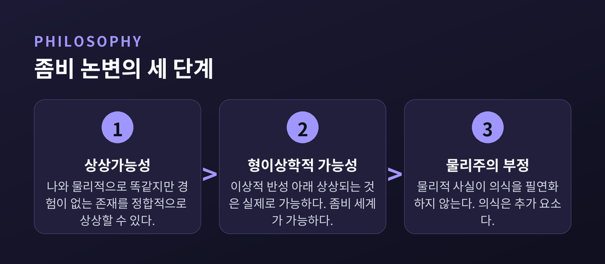
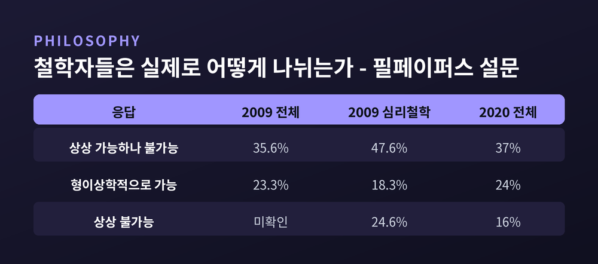
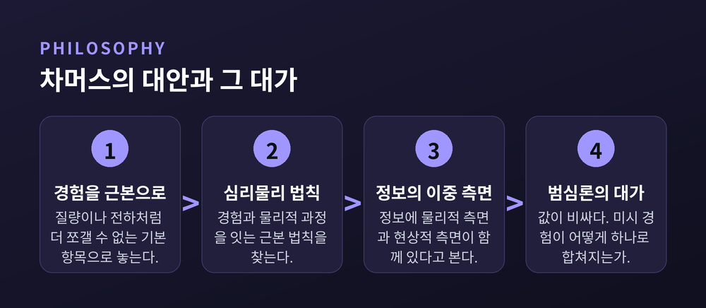

이번 글에서는 데이비드 차머스의 '의식의 어려운 문제'와 철학적 좀비 논변을 정리해 보겠습니다. 뇌를 아무리 정밀하게 들여다봐도 남는 질문이 하나 있다는 주장입니다. 그 주장이 어떤 구조로 세워졌고, 어디에서 반박당하는지를 단계별로 따라가 보겠습니다.
차머스가 '어려운 문제(hard problem)'라는 말을 정식화한 것은 1995년입니다. 『Journal of Consciousness Studies』 2권 3호에 실린 논문 「Facing Up to the Problem of Consciousness」에서였습니다. 이듬해 단행본 『The Conscious Mind』(1996)가 나오면서 논의는 학계 바깥까지 퍼졌습니다.
차머스가 먼저 한 일은 정리였습니다. '의식'이라는 말이 서로 다른 여러 현상을 뭉뚱그리고 있으니, 우선 갈라놓자는 것입니다.
그가 쉬운 문제로 분류한 목록은 일곱 가지입니다. 환경 자극을 변별하고 범주화하고 반응하는 능력, 인지 체계의 정보 통합, 정신 상태의 보고 가능성, 자신의 내부 상태에 접근하는 능력, 주의의 집중, 행동의 의도적 통제, 그리고 깨어 있음과 잠의 차이입니다.
이 문제들이 정말 쉽다는 뜻은 아닙니다. 차머스 본인도 세부를 다 푸는 데 한두 세기의 경험적 연구가 필요할 수 있다고 말했습니다. 표현은 농담에 가깝습니다. 인지심리학자 스티븐 핑커의 정리를 빌리면, 쉬운 문제란 과학자들이 무엇을 찾아야 하는지 이미 알고 있는 문제입니다. 두뇌와 연구비가 충분하면 언젠가 풀립니다.
쉬운 문제는 기능을 설명하면 끝납니다. 어떤 메커니즘이 그 일을 해내는지 보이면 설명 과제가 완수됩니다.
어려운 문제는 다릅니다. 경험 주변의 인지적·행동적 기능을 전부 설명한 뒤에도 물음 하나가 남습니다. 왜 이 기능들의 수행에 경험이 동반되는가. 『인터넷 철학사전』(IEP)은 이 문제를 더 날카롭게 씁니다. 왜 어떤 물리적 상태는 비의식적이지 않고 의식적인가.
어려운 문제의 정의에는 다른 철학자의 문장이 그대로 들어가 있습니다. 토머스 네이글입니다.
네이글의 논문 「What Is It Like to Be a Bat?」는 1974년 10월 『The Philosophical Review』에 실렸습니다. 여기 나오는 정식은 이렇습니다. 어떤 유기체가 의식적 심적 상태를 갖는다는 것은, 그 유기체로 있다는 것이 어떠한 것인가가 있을 때, 그리고 오직 그때뿐입니다. 그 유기체 자신에게 있어 어떠한 것인가가 있어야 합니다.
네이글은 이것을 경험의 주관적 성격이라 불렀습니다. 같은 것을 철학 문헌에서는 현상적 경험, '날것의 느낌', 그리고 퀄리아라고도 부릅니다.
박쥐는 반향정위로 세계를 잡아냅니다. 우리는 그 음파 지도가 박쥐에게 어떻게 느껴지는지 알 길이 없습니다. 다만 네이글은 선을 분명히 그었습니다. 우리가 그것을 파악하지 못한다는 사실이 박쥐에게 경험이 없다는 뜻은 아니라는 것입니다. 한계는 박쥐 쪽이 아니라 우리 상상력 쪽에 있습니다.
여기까지가 좀비 논변이 서게 될 바닥입니다. 기능은 3인칭으로 기술됩니다. 경험은 1인칭으로만 주어집니다. 그 틈을 어떻게 볼 것인가가 이후 30년의 싸움이 되었습니다.
용어부터 정리하겠습니다. 철학에서 말하는 좀비는 비틀거리지 않습니다. 신음하지도 않습니다.
철학적 좀비는 나와 물리적으로 완전히 동일하지만 의식적 경험이 전혀 없는 존재입니다. 원자 배열이 같고, 뇌의 발화 패턴이 같고, 행동이 같습니다. 손을 데면 똑같이 "뜨겁다"고 외치고 똑같이 손을 뗍니다. 다만 그 안쪽이 캄캄합니다. 뜨거움이 '느껴지는' 일이 일어나지 않습니다.
좀비 세계는 이것을 우주 규모로 확장한 것입니다. 우리 세계와 물리적으로 구별 불가능하지만, 의식적 경험이 완전히 비어 있는 세계입니다.
이 개념을 다룬 표준 참고 문헌은 스탠퍼드 철학백과(SEP)의 「Zombies」 항목입니다. 저자는 로버트 커크이고, 2003년 9월에 처음 실려 2023년 3월에 마지막으로 수정되었습니다. 20년 동안 계속 손을 봐야 했다는 사실 자체가 이 논쟁의 수명을 말해 줍니다.
논변 자체는 놀랄 만큼 짧습니다. 세 걸음이면 끝납니다.
1단계 — 상상가능성. 좀비가 있다는 것은 상상 가능하다(conceivable).
2단계 — 형이상학적 가능성. 좀비가 상상 가능하다면, 좀비가 있다는 것은 형이상학적으로 가능하다(metaphysically possible).
3단계 — 물리주의 부정. 좀비가 형이상학적으로 가능하다면, 의식은 물리적이지 않다.
따라서 의식은 물리적이지 않습니다. 물리주의는 거짓입니다.
3단계의 속내는 이렇습니다. 우리 세계와 물리적으로 똑같은데 의식만 빠진 세계가 가능하다면, 의식은 물리적 사실들로부터 필연적으로 따라 나오지 않습니다. 필연적으로 따라 나오지 않는다면, 의식은 물리적 사실 위에 얹힌 추가 요소입니다. 물리주의가 주장하는 것은 정확히 그 반대이지요.

SEP의 평가는 냉정합니다. 두 전제 모두 문제가 있다는 것입니다. 진술된 그대로는 불명료하고, 명료하게 다듬고 나면 논쟁적입니다. 핵심 물음은 하나로 모입니다. '상상 가능하다'를 어떻게 이해할 것인가.
차머스 쪽의 답은 이상적 합리적 반성 하에서의 상상가능성입니다. 잠깐 떠올려 보는 것이 아니라, 완전히 따져 보고도 모순이 드러나지 않는 상태를 말합니다.
1단계를 가장 세게 때린 사람은 대니얼 데닛입니다. 그의 논문 제목부터 노골적입니다. 「The Unimagined Preposterousness of Zombies」, 곧 '상상되지 않은 좀비의 터무니없음'입니다. 차머스의 논문과 같은 학술지, 바로 다음 호인 1995년 4월호에 실렸습니다.
데닛의 주장은 이렇습니다. 좀비가 상상 가능하다고 말하는 철학자들은 예외 없이 상상이라는 과제의 무게를 과소평가합니다. 머릿속에 떠올린 것은 좀비가 아니라, 어딘가 멍하고 속이 빈 무엇입니다. 그런데 정의상 좀비는 행동이 우리와 완전히 같아야 합니다.
데닛은 '짐보(zimbo)'라는 개념도 꺼냅니다. 자기 믿음에 대한 믿음까지 갖춘, 고차의 반성적 정보 상태를 지닌 좀비입니다. 짐보는 좀비를 끝까지 밀어붙이면 무슨 일이 벌어지는지 보여 주는 장치입니다. 의식적 존재가 심성 어휘를 발전시킨다면, 행동적 쌍둥이인 좀비도 똑같이 그럴 것입니다. 좀비들끼리 모여 '의식'을 논하고 '어려운 문제'를 걱정하게 된다는 뜻입니다.
2단계는 다른 방향에서 공격받습니다. 유형-B 물리주의의 전략입니다.
이 진영은 1단계를 순순히 내줍니다. 좀비는 상상 가능하다고 인정합니다. 대신 2단계를 끊습니다. 무기는 현상적 개념 전략입니다. 우리가 겪는 인식적 간극은 세계가 둘로 쪼개져 있어서가 아니라, 현상적 개념이 물리적 개념과 종류가 다르기 때문에 생긴다는 설명입니다. 대표적인 판본으로 브라이언 로어(1990/1997)와 데이비드 파피노(2002)가 꼽힙니다. 파피노는 이것을 '구별성의 직관'이라 부릅니다.
쉽게 말하면 이렇습니다. 좀비의 물리적·기능적 특성을 떠올릴 때 우리는 현상적 개념을 함께 동원하지 않습니다. 그래서 상상은 됩니다. 하지만 상상이 된다는 사실이 세계의 구조를 알려 주지는 않습니다.
이 전략은 물리주의 진영에서 가장 유망한 방어로 평가받습니다.
2단계를 둘러싼 싸움의 배후에는 솔 크립키가 있습니다.
크립키는 고정 지시어라는 개념을 세웠습니다. 지시하는 모든 가능세계에서 같은 것을 가리키는 표현입니다. 고정 지시어 둘이 들어간 동일성 진술은, 참이라면 필연적으로 참입니다. '물 = H₂O'가 그렇습니다. 참이면 필연적으로 참이지만, 그 참임은 경험을 통해 나중에 발견됩니다. 이것이 후험적 필연성입니다.
물리주의자들은 이 도구를 이렇게 씁니다. 의식이 뇌 상태인 것도 후험적 필연일 수 있습니다. 그렇다면 좀비가 상상된다는 사실은 세계에 대한 정보가 아니라 우리 인식의 한계를 보여 줄 뿐입니다.
여기서 반전이 있습니다. 정작 크립키 자신은 이 칼을 물리주의를 향해 휘둘렀습니다. 그는 '고통 = C섬유 자극'이라는 동일론을 겨냥합니다. C섬유 자극 없이 고통이 있는 것이 가능해 보인다는 점에서 출발합니다. '고통'과 'C섬유'가 둘 다 고정 지시어라면, 그 동일성은 참일 경우 필연적이어야 합니다. 그런데 필연적으로 보이지 않습니다. 고통 같은 상태는 느껴지는 현상적 성격에 의해 본질적으로 규정되기 때문입니다.
이것이 현상적 의식의 물리주의적 환원에 맞선, 가장 영향력 있는 양상 논변으로 남아 있습니다.
차머스가 이차원 의미론을 끌어들인 이유가 바로 여기에 있습니다. 그는 표현의 1차 내포와 2차 내포를 구분하고, 물리적 속성과 의식적 속성에 대해 1-상상가능성과 2-상상가능성이 일치한다면 상상가능성이 형이상학적 가능성을 함축한다고 논증합니다. 물론 이 장치가 성공했는지에 대해서도 합의는 없습니다.
차머스도 가만있지 않았습니다. 그는 2007년 논문에서 현상적 개념 전략에 딜레마를 겁니다. 순수 물리적 사실만 성립하고 현상적 개념을 특징짓는 심리적 특징이 빠진 상황이 상상 가능하다면, 그 특징들은 물리주의적으로 설명되지 않습니다. 반대로 상상 불가능하다면, 그 특징들은 좀비와 대비되는 우리의 인식적 상황을 설명하지 못합니다. 어느 쪽이든 곤란해집니다.
흥미로운 수치가 있습니다. 필페이퍼스(PhilPapers)가 두 차례 실시한 대규모 철학자 설문입니다.
2009년 설문에서 관련 학과 전문 철학자 전체를 기준으로, 상상 가능하지만 형이상학적으로 가능하지는 않다가 35.6%, 형이상학적으로 가능하다가 23.3%였습니다. 심리철학 전공자 191명으로 좁히면 각각 47.6%와 18.3%, 그리고 상상 불가능하다가 24.6%였습니다.
2020년 설문의 분포도 크게 다르지 않습니다. 상상 가능하지만 불가능 37%, 형이상학적으로 가능 24%, 상상 불가능 16%, 기타 23%입니다.
11년이 지났는데 지형이 거의 그대로입니다. 다수파는 차머스의 1단계를 받아들이고 2단계에서 멈춰 섭니다. 그럼에도 차머스의 결론까지 따라가는 철학자가 네 명 중 한 명꼴로 꾸준히 존재합니다.
정답이 정해진 문제였다면 이런 분포가 20년 가까이 유지되지는 않았을 것입니다.

논변이 성공했다고 치면 다음 질문이 옵니다. 그럼 의식은 무엇입니까.
차머스가 내놓은 답은 자연주의적 이원론입니다. 속성 이원론이라고도 부릅니다. 심적 속성은 물리적 속성으로 환원되지 않지만, 물리적 속성과 체계적으로 연결되어 있다는 입장입니다. 영혼을 다시 불러오자는 이야기가 아닙니다.
그는 경험을 근본적인 것으로 받아들이자고 제안합니다. 질량이나 전하처럼 더 쪼갤 수 없는 기본 항목으로 놓자는 것입니다. 그러면 그다음은 과학이 늘 하던 방식대로 하면 됩니다. 경험과 물리적 과정을 연결하는 근본 법칙을 찾는 것입니다. 차머스는 이것을 심리물리 법칙이라 부릅니다.
1995년 논문에서 그가 내건 후보는 세 가지였습니다. 구조적 정합성 원리, 조직적 불변 원리, 그리고 정보의 이중 측면입니다. 마지막 것이 가장 과감합니다. 우주의 기본 재료가 정보이고, 정보에는 물리적 측면과 현상적 측면이 함께 있다는 그림입니다.
여기서 대가가 발생합니다. 이 그림을 끝까지 밀면 범심론에 닿습니다. 정보를 담지하는 체계라면 무엇이든 의식적일 수 있다는 결론입니다. 차머스는 실제로 '의식을 가진 온도조절기'의 가능성까지 검토했습니다. 그가 조심스럽게 쓰는 이름은 범원심론입니다.
값은 비쌉니다. 범심론은 곧바로 조합 문제를 떠안습니다. 미시적 경험들이 어떻게 하나의 통합된 경험으로 합쳐지는가. 아직 만족스러운 답은 나오지 않았습니다.
반대편 끝에는 일루전주의가 있습니다. 키스 프랭키시가 대표합니다. 통상 생각되는 방식의 현상적 의식 자체가 환상이라는 견해입니다. 차머스의 반응은 짧고 단호합니다. 일루전주의는 명백히 거짓인데, 사람들이 고통을 느낀다는 것은 명백하기 때문이라는 것입니다.
다만 차머스도 상대의 물음은 진지하게 받았습니다. 2018년에 그가 제기한 메타 문제가 그것입니다. 우리는 왜 어려운 문제가 있다고 생각하고 말하는가. 이 물음이 물리적·기능적 용어로 풀린다면, 일루전주의 쪽의 논거가 단단해집니다.

30년 전에는 이 논쟁이 박쥐와 가상의 쌍둥이 사이에서 벌어졌습니다. 지금은 매일 쓰는 도구 앞에서 벌어집니다.
차머스 본인이 이 자리에 나섰습니다. 2022년 11월 NeurIPS 학회 강연에서 「거대 언어 모델은 의식적일 수 있는가?」를 발표했고, 2023년에 arXiv 프리프린트와 『보스턴 리뷰』 글로 정리했습니다.
그가 꼽은 현행 모델의 장애물은 세 가지입니다. 순환 처리의 부재, 전역 작업공간의 부재, 통합된 행위주체성의 부재입니다. 다만 그는 이 장애물들이 10년 남짓 사이에 극복될 가능성이 상당하다고 봅니다. 결론은 이렇게 양면적입니다. 현행 모델이 의식적일 가능성은 다소 낮지만, 그 후속 모델들이 머지않아 의식적일 가능성은 진지하게 받아들여야 한다는 것입니다.
비슷한 시기에 패트릭 버틀린과 로버트 롱을 비롯한 연구진이 「인공지능에서의 의식」 보고서를 냈습니다. 접근 방식이 영리합니다. 의식 이론들을 계산적으로 검사 가능한 지표 속성으로 번역하자는 것입니다. 순환 처리 이론, 전역 작업공간 이론, 고차 이론, 예측 처리, 주의 스키마 이론에서 14개 지표를 끌어냈습니다. 판정은 두 갈래였습니다. 현행 AI 중 의식적인 것은 없다. 그러나 이 지표들을 만족하는 체계를 만드는 데 명백한 기술적 장벽도 없다.
여기서 어려운 문제가 다시 고개를 듭니다. 지표들은 어디서 왔습니까. 순환 처리, 전역 작업공간, 고차 표상은 모두 차머스가 1995년에 쉬운 문제 쪽으로 분류한 기능들의 후손입니다.
그러니 결론은 갈라집니다. 좀비 논변이 옳다면, 14개 지표를 전부 만족하는 AI조차 형이상학적으로는 좀비일 수 있습니다. 반대로 좀비 논변이 틀렸다면, 지표를 다 채우는 순간 더 물을 것이 남지 않습니다.
한 가지만 덧붙이겠습니다. 차머스 자신은 AI 의식에 대해 오히려 열린 쪽입니다. 그의 조직적 불변 원리는 미세 기능적 조직이 같으면 경험도 질적으로 같다고 말합니다. 뉴런을 실리콘 칩으로 하나씩 갈아 끼우는 사고실험이 그 근거입니다. 이 원리를 받아들이면, 우리의 기능적 조직을 복제한 체계는 실리콘으로 만들어졌든 수도관으로 만들어졌든 의식적입니다. 그가 그리는 좀비는 형이상학적으로는 가능하되 자연법칙상으로는 불가능한 존재입니다.
이 대목은 자주 오해됩니다. 좀비 논변을 들어 "그러니 AI는 절대 의식을 가질 수 없다"고 말한다면, 차머스의 절반만 읽은 것입니다.
정리하면 이렇습니다.
차머스는 뇌 과학을 부정하지 않았습니다. 그는 뇌 과학이 무엇을 설명하고 있고 무엇을 설명하지 않고 있는지를 갈라 놓았을 뿐입니다. 좀비 논변은 그 구분을 가장 날카롭게 벼린 도구입니다. 그리고 그 도구는 지금도 세 단계 모두에서 반박당하고 있습니다.
어느 쪽이 옳은지 저는 모르겠습니다. 다만 30년 가까이 분포가 거의 움직이지 않았다는 사실은 무언가를 말해 줍니다. 이것은 자료가 부족해서 못 푸는 문제가 아니라, 물음의 형태 자체가 아직 정해지지 않은 문제일지 모릅니다.
남는 것은 결국 한 문장입니다.
"설명이 끝난 자리에 왜 아직 느낌이 남아 있는가."
기계가 그 물음을 스스로 던지는 날이 온다면, 우리는 그것을 증거로 받아들일 수 있을까요. 데닛이라면 그것으로 충분하다고 답할 것입니다. 차머스라면, 바로 그것이 좀비도 할 수 있는 일이라고 답할 것입니다.